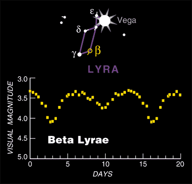
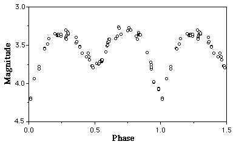

|
Science report format
Title PageTitle Author name, Date, Course Abstract (50-200 words) State the goals of the project. Briefly summarize the methods and results. Introduction (100 - 800 words) Most of your projects involve checking something that is already known. Here you can describe what you expect to find based on what you read in textbooks and other references. Describe the physics and/or geometry of the situation. Some historical background can be discussed here. (You'll have to do a little research for this section.) Procedure Describe how you made your observations. If any measurement tools were used (e.g., an astrolabe or a gnomon), describe how they were made/acquired and how they were used. Results Include raw data (written in ink or pencil) and neatly tabulated data. Show sample calculations, as needed. Make graphs and plots, as appropriate, to try to address the goals of the project. Conclusions Try to make sense out of you observations. Address any questions I gave you in the project description. Did you observe what was expected (as described in the introduction)? You may not see a clear result because of uncertainties in your measurements, so discuss uncertainties. References |
| Name |
Type* |
RA(2000.0) |
DEC(2000.0) |
Magnitude |
Period (days) |
| Algol (beta Persei) |
E |
3h 8.2m |
40° 57.0' |
2.1-3.4 |
2.9 |
| lambda Tauri |
E |
4h 0.7m |
12° 29.4' |
3.4-3.9 |
3.95 |
| zeta Geminorum |
C |
7h 4.1m |
20° 34.0' |
3.7-4.2 |
10.2 |
| W Sagittarii |
C |
18h 5.0m |
-29° 34.8' |
4.3-5.1 |
7.59 |
| beta Lyrae |
E |
18h 50.1m |
33° 22.0 |
3.3-4.3 |
12.9 |
| eta Aquilae |
C |
19h 52.5m |
+1° 0.3 |
3.5-4.5 |
7.18 |
| delta Cephei |
C |
22 29.2m |
58° 25.0' |
3.5-4.4 |
5.4 |
| 1) Date | 2) Time (EST) |
3) Location |
4) Sky Conditions |
5) Variable Star Name |
6) Exp. Phase |
7) Comp. Star just fainter |
8) Comp. star just briter | 9) Magnitude estimate |
10) Azimuth | 11) Altitude |
12) Comments |
| MM/DD/YYYY |
HH:MM |
Cloud cover (%). |
(Name) | (Name) |
(Name) | (mag) |
(Deg) | (Deg) |
|||
| EXAMPLE |
|||||||||||
| 2/2/2013 |
21:32 |
ONU Observatory |
Small puffy clouds covering only 20%. |
Algol |
0.3 |
alpha Persei |
beta Persei | 2.0 +- 0.2 |
35+-5° | 40+-5° | |
| '' |
21:38 |
" |
" |
beta Lyrae |
0.5 |
gamma Lyrae (3.2) |
zeta Lyrae (4.4) | 3.3+0.4-0.1 |
110+-5° | 70+-5° | very close to gamma in mag |
|  |  |